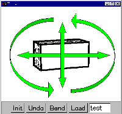

[1.Camera]
[2.Create]
[3.Paint]
[4.Extrude]
[5.Cut]
[6.Smooth]
[7.Bend]
[8.File]
Step 1: Camera Control

1) Right-button drag changes the camera position.
2) Look at the model from several different angles.
3) Right-button drag immediately after a right-button click scales the object.
When you have practiced enough, go to
step 2.
If the program works strangely, close the applet window and
restart the applet.
Copyright (C) 1998
Takeo Igarashi